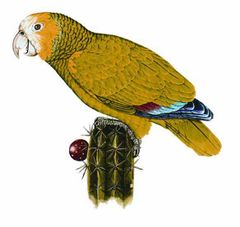
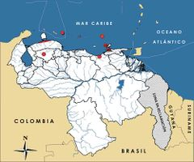

Amazona barbadensis
| Cotorra cabeciamarilla | |
|---|---|
|  | |
| Riesgo de extinción | |
 En peligro (UICN) | |
| Clasificación científica | |
| Reino: | Animalia |
| Filo: | Chordata |
| Clase: | Aves |
| Orden: | Psittaciformes |
| Familia: | Psittacidae |
| Género: | Amazona |
| Especie: | Amazona barbadensis |
| Nombre binomial | |
|
Amazona barbadensis Gmelin, 1788 | |
| Distribución | |
|
 Mapa de distribución de Amazona barbadensis | |
Contenido
Información de Evaluación
- Categoría y Criterio Regional: En Peligro C2a(ii)
- Fecha de Evaluación Regional: 2015
- Evaluadores: Jesús Morales-Campos y Ariany García-Rawlins
- Categoría y Criterio Global: Vulnerable B1ab(i,ii,iii
Justificación
Evaluaciones Previas
1999: En Peligro (EN)
2008: En Peligro (EN)
Información General
Nombres comunes
Cotorra cabeciamarilla, cotorra margariteña, cotorra, cota, loro de hombros amarillos, amazona de hombro gualda, Yellow-shouldered parrot.
Notas taxonómicas
Sinónimos
Descripción
Psitácido de tamaño mediano que mide entre 33 y 36 cm. Se identifica muy fácil por el color amarillo en la parte superior de su cabeza, garganta y cuello, con un poco de blanco en la frente. Tiene ojos rojos o anaranjados y el pico blanquecino. El cuerpo es verde brillante. El borde negro de sus plumas le da un aspecto escamado. Su cola es corta. En vuelo, lo más notorio aparte de su cabeza, es el ala con hombro amarillo, parche rojo y extremo azul (Phelps Jr. y Meyer de Schauensee 1979, Forshaw 2006).
Distribución
Amazona barbadensis es casi endémica de Venezuela. Se encuentra restringida a unas pocas localidades aisladas en las zonas áridas del norte del país, en Lara (Saroche, Carora), Falcón (Dabajuro, Casigua, Paraguaná), Anzoátegui (alrededores de Píritu y Barcelona) y Sucre (península de Araya), así como en tres islas del Caribe, La Blanquilla, Margarita y Bonaire. Su distribución anterior quizá incluía Curaçao y Aruba, pero en esta última se extinguió alrededor de 1950. Es la única especie del género adaptada en exclusivo a zonas áridas (Phelps Jr. y Meyer de Schauensee 1979, BirdLife International 2000, Hilty 2003, Forshaw 2006).
- Sistema: Terrestre
- Bioregión:
- Intervalo altitudinal (m): 450
- Endémica: No
Situación
Se considera una de las especies de aves más amenazadas y con alta prioridad de conservación en Venezuela (Rodríguez, J. P. et al. 2004b). Amazona barbadensis es fuertemente comercializada, su hábitat se encuentra muy amenazado, su distribución se ha reducido de modo significativo, y su tamaño poblacional total se estima en 5000 individuos, aunque es probable que sea un poco mayor (Lambert et al. 1992, Rodríguez, J. P. y Rojas-Suárez 1994, BirdLife International 2000, Rodríguez, J. P. y Rojas-Suárez 2003). Cuatro de sus poblaciones se pueden calificar En Peligro (Lara, Falcón, Píritu, y la del oeste de Margarita), tres En Peligro Crítico (La Blanquilla, Araya, Bonaire), y entre dos y cuatro la reportan como Extinta (Aruba, Paraguaná, este de Margarita, y probablemente Curaçao). En específico en Venezuela, la población de Paraguaná está Probablemente Extinta, ya que observaciones a fines de los años ochenta indican individuos aislados y un máximo de cinco ejemplares juntos. El caso más alarmante es el de la isla La Blanquilla, donde a principios del siglo XX era «sorprendentemente abundante», y cuya población actual se estima en alrededor de 120 individuos (Rodríguez, J. P. et al. 2004a, Forshaw 2006). Las poblaciones de las islas Margarita y La Blanquilla han sido bastante estudiadas (Rojas-Suárez 1994a, Rojas-Suárez 1994b, Sanz y Rojas-Suárez 1997, Silvius 1997, Sanz y Grajal 1998a, Sanz y Grajal 1998b). En la isla de Margarita los esfuerzos conservacionistas han aumentado la población de 650 a 750 ejemplares en 1989, y a cerca de 2000 individuos en 2015. No se cuenta con estimados poblacionales para las otras localidades (Sanz et al. 2003, Sanz y Rodríguez-Ferraro 2006). Un análisis cuantitativo reciente sugiere que en la ausencia de conversión de hábitat (escenario optimista), su probabilidad de persistencia en los próximos cien años está en el orden del 10% (Rodríguez, J. P. et al. 2004a). En Bonaire se calcula que habitan de 400 a 450 individuos. Aunque en 1992 se le reportó en la categoría Insuficientemente Conocida, actualmente se le considera Vulnerable o En Peligro según la fuente (Collar et al. 1992, Desenne y Strahl 1994, BirdLife International 2000, IUCN 2014).
- EOO (km2): 11000
- AOO (km2): Temporalmente sin información
- Tendencia Poblacional: Desconocida
Amenazas
Su principal amenaza a escala nacional e internacional es la captura y la comercialización de pichones para su uso como mascota. A esto le sigue la destrucción de las zonas de reproducción y alimentación, y en menor grado, su cacería, por considerarse plaga de cultivos. Adicionalmente, en La Blanquilla podrían existir problemas por la introducción de especies exóticas, como los gatos (Felis silvestris catus) (Rojas-Suárez 1994b). En la isla de Margarita la minería de arena a cielo abierto en las quebradas de la península de Macanao ha afectado de forma grave tanto las áreas de reproducción y alimentación como los dormideros de Amazona barbadensis. Dicha presión no está siendo regulada adecuadamente por los entes oficiales y no hay indicios de que vaya a disminuir en el futuro próximo.
Conservación
En el ámbito internacional A. barbadensis se encuentra incluida en el Anexo II del Protocolo relativo a las áreas y flora y fauna silvestres especialmente protegidas en la Región del Gran Caribe (SPAW 1991) y en el Apéndice I de la Convención sobre el comercio internacional de especies amenazadas de fauna y flora silvestres (Cites 2014). En Venezuela se establece su veda indefinida desde 1970, medida que se ratifica en 1996, cuando también se declara Especie en Peligro de Extinción. Cuenta además con un decreto regional específico para su conservación en el estado Nueva Esparta (Venezuela 1970, Gobernación del estado Nueva Esparta 1990, Venezuela 1996a, Venezuela 1996b). En los parques nacionales Laguna de La Restinga (Nueva Esparta), Juan Crisóstomo Falcón (Falcón) y Cerro Saroche (Lara), protegen parte de su distribución. En la isla de Margarita, organizaciones privadas nacionales e internacionales, el gobierno nacional y regional y los propietarios de tierras coordinados por Provita, han establecido una exitosa alianza educativa que utiliza a la especie como emblema para la exaltación del orgullo regional. De manera simultánea, se desarrolla un programa de manejo e investigación en tierras privadas del Hato San Francisco, apoyado con actividades de guardería ambiental. Se ha logrado el mantenimiento en cautiverio de cotorras decomisadas y su reintroducción exitosa en la vida silvestre en Margarita y La Blanquilla (Sanz y Grajal 1998a). Es prioritario evaluar la situación poblacional de A. barbadensis en las zonas continentales, así como definir su estatus taxonómico mediante el estudio de distancias genéticas, morfológicas y de comportamiento. En la isla de Margarita es urgente la declaración de un área protegida en las zonas altas y bajas de la península de Macanao. Se recomienda la continuación y el fortalecimiento de los planes de conservación que se desarrollan en Margarita y La Blanquilla, así como su ampliación a otras áreas de distribución. Los objetivos de su recuperación poblacional, manejo, guardería y reintroducción deben permanecer vigentes y ser apoyados en campañas de educación ambiental efectivas (Snyder et al. 2000).
Autorías
Autores originales
Franklin Rojas-Suárez y Jon Paul Rodríguez
Colaboradores
Ilustrador
E. Sensitiva Quintero
Referencias
- BirdLife International (2000). Threatened Birds of the World. The official source for birds on the IUCN Red List. Lynx Edicions. Barcelona, España. 864 pp.
- Collar, N. J., Gonzaga, L. P., Krabbe, K., Nieto, A. M., Naranjo, L. G., Parker III, T. A. y Wege, D. C. (1992). Threatened Birds of the Americas. The ICBP/IUCN Red Data Book (3rd ed. part 2). International Council for Bird Preservation. Cambridge. 1150 pp.
- Cites. (2014). Apéndices I, II y III (válidos desde el 14 de septiembre de 2014). Convención sobre el Comercio Internacional de Especies Amenazadas de Fauna y Flora Silvestres (CITES). 47 pp.
- Desenne, P. y Strahl, P. (1994). Situación poblacional y jerarquización de especies para la conservación de la familia Psittacidae en Venezuela. Páginas: 231-272. En: Biología y Conservación de los Psitácidos de Venezuela. SCA, EBAFY, EcoNatura, SCAPNHP, Provita. Caracas, Venezuela.
- Forshaw, J. M. (2006). Parrots of the World: An Identification Guide. Princeton University Press. Princeton, New Jersey, USA. 400 pp.
- Hilty, S. L. (2003). Birds of Venezuela, second edition. Princeton University Press. Princeton, NJ, USA. 878 pp.
- IUCN (2014). The IUCN Red List of Threatened Species. Version 2014.3. Accesible en www.iucnredlist.org.
- Lambert, F., Wirth, R., Seal, U. S., Thomsen, J. B. y Ellis-Joseph, S. (1992). Parrots, an Action Plan for their Conservation and Management 1993-1998. International Council for Bird Preservation Parrot Specialist Group. Cambridge, U.K.
- Phelps Jr., W. H. y Meyer de Schauensee, R. (1979). Una guía de las Aves de Venezuela. Gráficas Armitano. Caracas. 484 pp.
- Rodríguez, J. P. y Rojas-Suárez, F. (1994). Análisis de viabilidad poblacional de tres poblaciones de psitácidos insulares de Venezuela. Páginas: 97-113. En: Biología y Conservación de los Psitácidos de Venezuela. SCAV, EBAFY, EcoNatura, SCAPNHP, Provita. Caracas, Venezuela.
- Rodríguez, J. P. y Rojas-Suárez, F. (1999). Libro Rojo de la Fauna Venezolana, segunda edición. PROVITA, Fundación Polar. Caracas. 444 pp.
- Rodríguez, J. P. y Rojas-Suárez, F. (2003). Libro Rojo de la Fauna Venezolana (2a ed. reim.). Provita, Fundación Polar. Caracas. 472 pp.
- Rodríguez, J. P. y Rojas-Suárez, F. (Eds.) (2008). Libro Rojo de la Fauna Venezolana, tercera edición. Provita y Shell Venezuela, S. A. Caracas, Venezuela. 364 pp.
- Rodríguez, J. P., Fajardo, L., Herrera, I., Sánchez, A. y Reyes, A. (2004a). Yellow-Shouldered Parrot (Amazona barbadensis) on the Islands of Margarita and La Blanquilla, Venezuela: Poaching and the Survival of a Threatened Species. Páginas: 361-370. En: Species Conservation and Management. Oxford University Press. Oxford.
- Rodríguez, J. P., Rojas-Suárez, F. y Sharpe, C. J. (2004b). Setting priorities for the conservation of Venezuela's threatened birds. Oryx 38(4): 373-382.
- Rojas-Suárez, F. (1994a). Biología reproductiva de la cotorra, Amazona barbadensis (Aves: Psitaciformes), en la península de Macanao, estado Nueva Esparta. Páginas: 73-87. En: Biología y Conservación de los Psitácidos de Venezuela. SCA, EBAFY, EcoNatura, SCAPNHP, Provita. Caracas, Venezuela.
- Rojas-Suárez, F. (1994b). Evaluación preliminar de la población de cotorra (Amazona barbadensis) en la isla La Blanquilla, Venezuela. Páginas: 89-96. En: Biología y Conservación de los Psitácidos de Venezuela. SCA, EBAFY, EcoNatura, SCAPNHP, Provita. Caracas, Venezuela
- Rojas-Suárez, F. y Rodríguez, J. P. (2015). Cotorra cabeciamarilla, Amazona barbadensis. En: J.P. Rodríguez, A. García-Rawlins y F. Rojas-Suárez (eds.) Libro Rojo de la Fauna Venezolana. Cuarta edición. Provita y Fundación Empresas Polar, Caracas, Venezuela. Recuperado de: animalesamenazados.provita.org.ve/content/cotorra-cabeciamarilla-0 Sáb, 29/04/2017 - 13:24
- Sanz, V., Rodríguez-Ferraro, A., Albornoz, M. y Bertsch, C. (2003). Use of artificial nests by the yellow-shouldered parrot (Amazona barbadensis). Ornitologia Neotropical 14(3): 345-351.
- Sanz, V. y Rodríguez-Ferraro, A. (2006). Reproductive parameters and productivity of the yellow-shouldered parrot on Margarita Island, Venezuela: a long-term study. Condor 108: 178-192.
- Sanz, V. y Grajal, A. (1998a). Consideraciones y recomendaciones sobre liberaciones de psitácidos. Vida Silvestre Neotropical 7(2-3): 83-89.
- Sanz, V. y Grajal, A. (1998b). Successful reintroduction of captive-raised yellow-shouldered amazon parrots on Margarita island, Venezuela. Conservation Biology 12(2): 430-441.
- Sanz, V. y Rojas-Suárez, F. (1997). Los nidos nodriza como técnica para incrementar el reclutamiento de la cotorra cabeciamarilla (Amazona barbadensis, Aves: Psittacidae). Vida Silvestre Neotropical 6(1-2): 8-14.
- Silvius, K. M. (1997). What it takes to save a parrot. Wildlife Conservation 100(3): 52-57, 66.
- SPAW (1991). Procotolo Relativo a las Áreas y a la Flora y Fauna Silvestres Especialmente Protegidas del Convenio para la Protección y el Desarrollo del Medio Marino en la Región del Gran Caribe (conocido como SPAW, por sus siglas en inglés). Anexo III: List of Species of Marine and Coastal Flora and Fauna Protected Under Article 11(1)(c). 11 11(1).
- Snyder, N., McGowan, P., Gilardi, J. y Grajal, A. (2000). Parrots. Status Survey and Conservation Action Plan 2000-2004. IUCN. Gland, Switzerland and Cambridge, U.K. x + 180 pp.
- Verea, C., G. A. Rodríguez, D. Ascanio y A. Solórzano. 2014. Los Nombres Comunes de las Aves de Venezuela (2da Edición). Comité de Nomenclatura Común de las Aves de Venezuela, Unión Venezolana de Ornitólogos (UVO), Caracas, Venezuela.
- Venezuela. (1970). Ley de Protección a la Fauna Silvestre. Gaceta Oficial No. 29289 del 11 de agosto de 1970. Caracas.
- Venezuela. (1996a). Decreto 1485: Animales Vedados para la Caza. Gaceta Oficial No. 36.059 - 7 de octubre de 1996. Caracas.
- Venezuela. (1996b). Decreto 1486: Especies en Peligro de Extinción. Gaceta Oficial No. 36.062- 10 de octubre de 1996. Caracas.